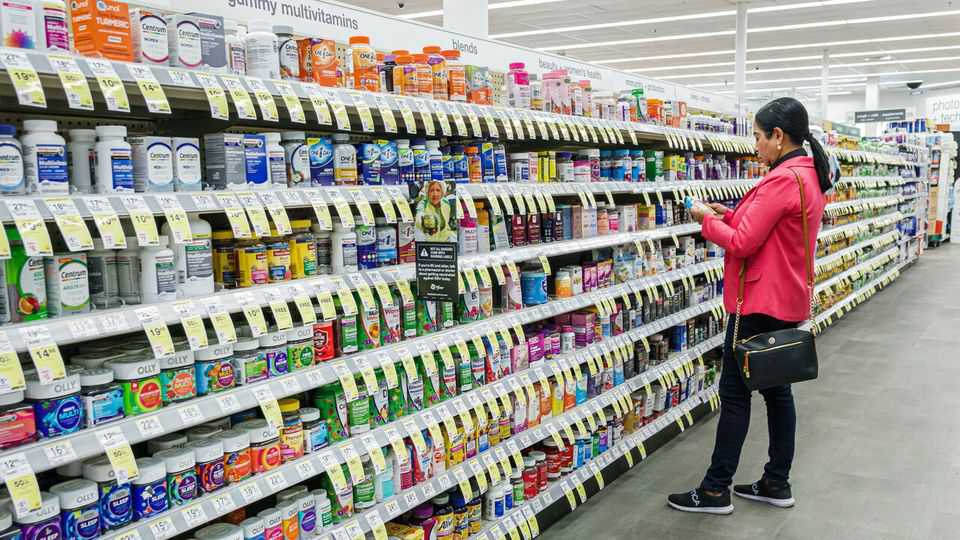

Why supplements need supplemental disclosures
A new book takes aim at the marketing and pseudoscience behind the wellness industry

Oct 1st 2026
During the Tang dynasty, Emperor Xuanzong became so distracted by a beautiful young woman with luminous skin, Yang Guifei, that he neglected his duties and nearly lost his empire. The secret behind her good looks was ejiao, a Chinese collagen supplement made from boiling donkey hides. Or so claim marketers promoting the pricey product, which promises youthful skin and graceful ageing. (Though Guifei was executed, so never experienced the latter.)
Today collagen is one of the most popular supplements in the wellness sector. But after researchers removed studies with industry funding or poor design, they found no clinical evidence that the “miracle” supplement with the supposed power to topple a dynasty truly makes an impact on your forehead wrinkles.
A new book by Xand van Tulleken, an English doctor, argues that the booming wellness industry is “a modern myth factory”. When supplements such as collagen are promoted with trumped-up medical “science”, it can “blur the line between wellness and health care” with harmful consequences, he argues.
“Make Me Well” is well-timed. Ten years ago “biohacking”, or the practice of using science, data and lifestyle changes to optimise your health, was not recognised by dictionaries. But in 2025 it was shortlisted by Collins Dictionary as a word of the year. Wellness is now a $2trn industry, by a McKinsey estimate (which includes supplements and health-tracking devices, but not groceries). American consumers spend $500bn a year on wellness products. Every Tom, Dick and Harry (or rather Kim, Khloé and Kylie) is now an ambassador for one.
Mr van Tulleken argues two things convincingly. First, despite extravagant promises that supplements make you live longer, see better and feel brighter, there is little proof that they have the ability to boost your health at all unless you are severely nutritionally deficient.
He takes a swipe at the hype around menopause supplements, for example. Following wild exaggerations of the supposed dangers of HRT, an oestrogen-based treatment for symptoms of menopause, the alternative-medicine industry started pushing supplements to perimenopausal women. However, recent investigations show a lack of standardisation across ingredients, limited effectiveness and, in some cases, harmfully high doses of vitamins. In America spending on menopause supplements was $18bn in 2024, over 300 times more than was invested in menopause research. Instead of injecting money into improving care for women, the wellness industry benefits from “the confusion that 20 years of miscommunicated science has created”.
Second, the business of personal testing and wearable technology creates a culture of expensive and often unnecessary health interventions. You can now monitor your glucose spikes, sleep and gut microbiome at home. Decentralised monitoring claims to democratise health, empower the patient through self-knowledge and offer “peace of mind”. But there is little evidence that doing lots of testing makes most people healthier. Excess screenings can lead to false positives, increased patient anxiety and further unnecessary tests.
“Make Me Well” is a thorough, entertaining investigation into the unintended consequences of the wellness industry. It may well wake consumers up to the marketing fluff that drives their purchases. The author argues for starting a registry of supplements, requiring independent third-party testing and enforcing regulation of bogus health claims. Government officials are already pushing to strengthen oversight of supplements to ensure safety and efficacy. That would be, well, welcome. ■